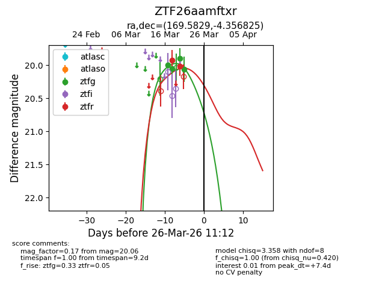
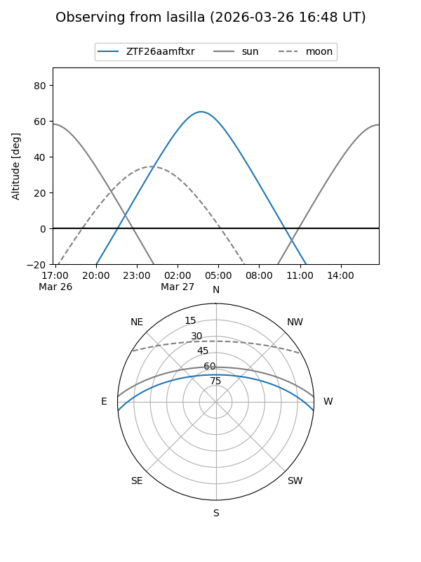
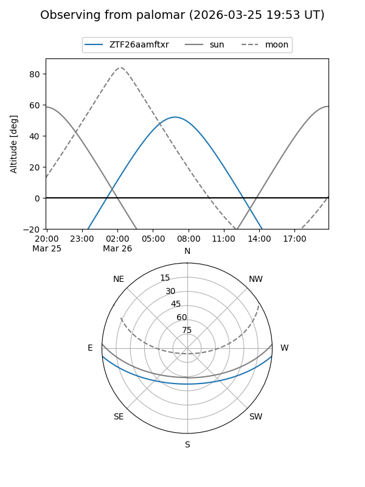
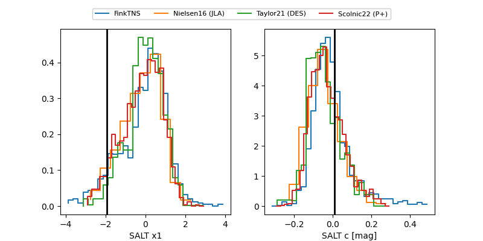

ZTF26aamftxr
Target ZTF26aamftxr at 2026-03-26 11:14
Aliases and brokers:
FINK: link
Lasair: link
ALeRCE: link
alt names
ZTF26aamftxr (ztf,fink_ztf)
Coordinates:
equatorial (ra, dec) = 169.5829,-4.35683
equatorial (HMS+DMS) = 11:18:19.90,-04:21:24.57
galactic (l, b) = (263.8561,+51.31075)
Flags:
Photometry:
last ztfg=20.06, ztfr=20.02
4 ztfg, 2 ztfr detections
Lightcurve

Visibility


Additional plots
